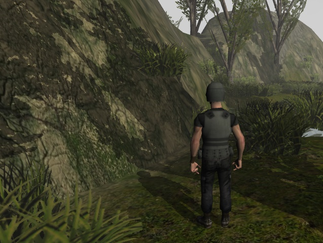
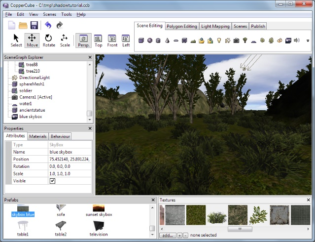

CopperLicht API Documentation
All tutorials
CopperLicht Tutorial: Shadows
This tutorial demonstrates how to add realtime 3D shadows in CopperLicht.
The final result of this tutorial will look about like this:

Realtime 3D shadows in action.
Realtime 3D shadows in action.
- Show live demo of this tutorial
- Download this tutorial as zip archive.
Creating the scene
To create a scene quickly for our shadows, we use the CopperCube editor. Click on the 'create Terrain' button (or use the menu Edit -> Insert -> Create Terrain). You need to be sure to include a directional light in your scene. Otherwise you won't get any shadows. The scene might then look like this:
Use CopperCube to save the scene into a directory of your choice and publish the scene as WebGL/JavaScript (Choose Tools -> Test as JavaScript/WebGL). This will create a .ccbjs or .ccbz file with this scene which we can load using CopperLicht.
Writing CopperLicht code
Now create a .html file in that directory and paste the following code into it. What it does will be explained in detail below.
<html>
<head>
<meta http-equiv="Content-Type" content="text/html; charset=windows-1252">
<title>WebGL Shadowmap test</title>
<script type="text/javascript" src="copperlicht.js"></script>
</head>
<body>
<div align="center">
<br/><br/>
<canvas id="3darea" width="640" height="480" style="background-color:#000000">
</canvas>
</div>
<script type="text/javascript">
<!--
// create the 3d engine
var engine = new CL3D.CopperLicht('3darea');
var scene = null;
var setupShadowScene = null;
if (engine.initRenderer())
{
setupShadowScene = function()
{
scene = engine.getScene();
// now setup everything needed for shadow mapping
scene.ShadowMappingEnabled = true;
scene.ShadowMapOpacity = 0.5;
scene.ShadowMapResolution = 1024;
scene.ShadowMapBias = 0.0001;
scene.ShadowMapCameraViewDetailFactor = 0.1;
}
}
engine.load('copperlichtdata/test.ccbz', false, setupShadowScene);
-->
</script>
</body>
</html>
What the code does
As always, the first few lines of the html code are creating a canvas element inside a container.So let's start with the javascript code. Basically, we simply initialize the 3d engine and tell it to load the scene file we created in the editor, in the last line. You might have to adjust the file name of the .ccbjs file to fit the name you picked when saving the scene.
engine.load('copperlichtdata/test.ccbz', false, setupShadowScene);
In the middle of the code, we have a function, which gets called once everything is loaded.We Only use it to set up the shadow drawing parameters:
scene.ShadowMappingEnabled = true; scene.ShadowMapOpacity = 0.5; scene.ShadowMapBias = 0.0001; scene.ShadowMapCameraViewDetailFactor = 0.1;Basically, we enable shadow drawing by setting 'ShadowMappingEnabled' to true. All the following parameters are just optional. You can tweak them a bit in order to make them work nicely with your own scene: 'ShadowMapOpacity' controls the transparency with which the shadows are being drawn. ShadowMapBias is important and depending on your scene. Tweak it so that the shadows in your scene look the way you want them to, values like 0.001, 0.0001 or even 0.00001 are usual.
'ShadowMapCameraViewDetailFactor' gives a way to adjust the detail: Between how long are shadows visible in the distance and how detailed the shadow map is in close vicinity. Make the value bigger (like 1.0) for longer viewable shadows but with smaller details, and smaller (like 0.2) for detailed shadow which don't have a big view distance.
And basically, that's it. Now you know how to use shadows in CopperLicht.
More Tutorials
© 2011-2018 N.Gebhardt, Ambiera
Documentation generated by JsDoc Toolkit
Documentation generated by JsDoc Toolkit